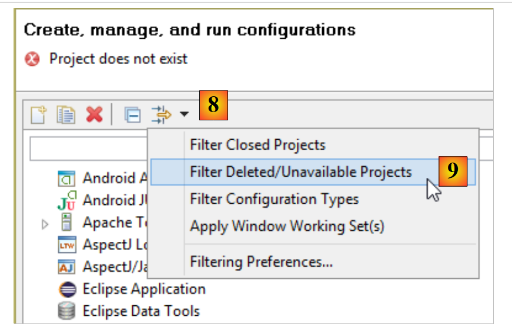
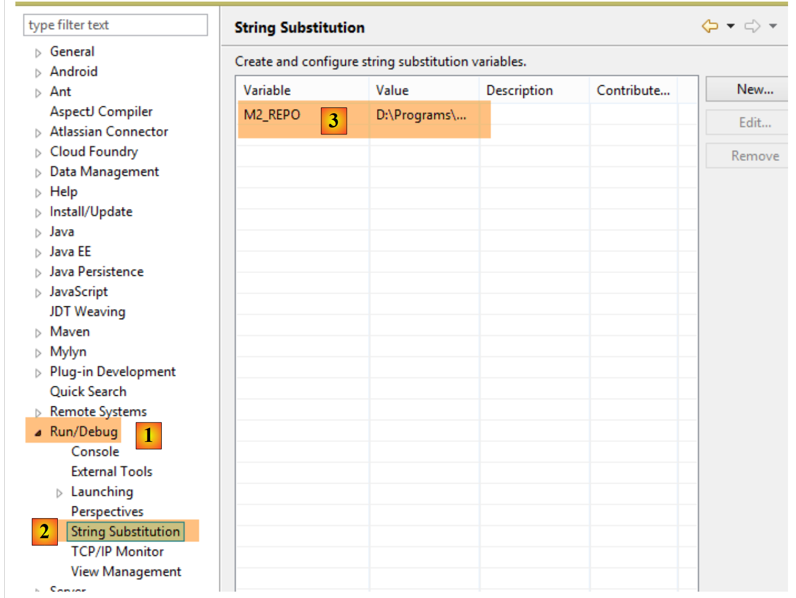
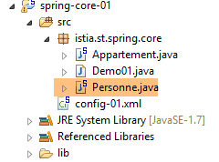
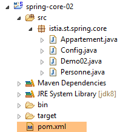
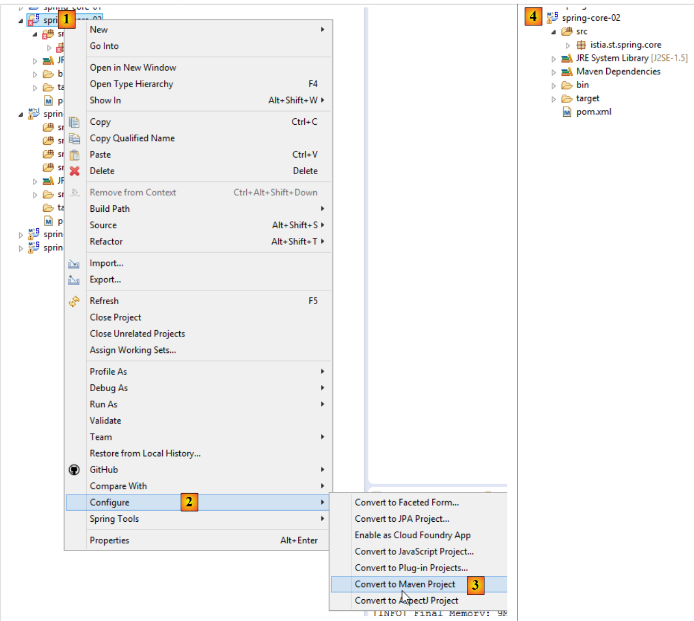
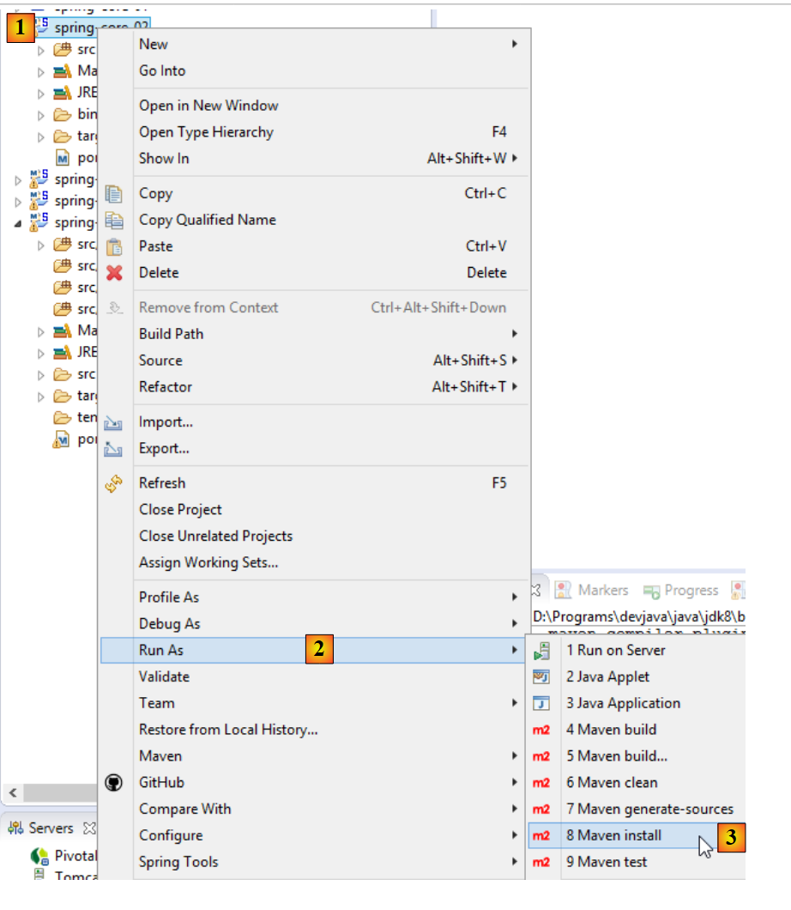
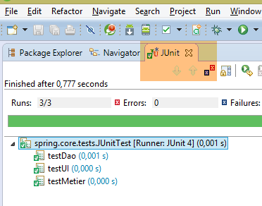

2. مقدمة إلى إطار عمل Spring
ظهر Spring لأول مرة في عام 2004 كحاوية كائنات. ومنذ ذلك الحين، تطور إلى فروع متعددة: Spring MVC، وSpring Data، وSpring Batch، ... [http://spring.io]. في هذا الفصل، سنركز فقط على حاوية الكائنات. فيما يلي بعض النقاط الرئيسية:
- يحتوي التطبيق على فئات متعددة، وبعضها يشترك في كائنات يجب أن تكون فريدة (singletons). يقوم Spring بإنشاء وإدارة هذه الكائنات الفريدة؛
- يضع Spring هذه الكائنات الفردية في بنية تسمى السياق؛
- تصل الفئات إلى الكائنات الفردية للتطبيق عن طريق طلبها من Spring عبر اسمها أو نوعها أو كليهما؛
- يقوم Spring بإنشاء الكائنات الفردية وإدارة أي تبعيات قد تكون لها: فقد تحتوي الكائنات الفردية بالفعل على مراجع إلى كائن فردي واحد أو أكثر. وعندما يقوم Spring بإنشاء كائن فردي، فإنه يقوم أيضًا بإنشاء تبعياته؛
- عندما يبدأ تشغيل تطبيق قائم على Spring، يمكنه أن يطلب من Spring إنشاء جميع العناصر الفردية للتطبيق. وستكون هذه العناصر متاحة بعد ذلك في سياق Spring؛
- يسهل Spring استخدام البنى الطبقية والبرمجة القائمة على الواجهات. في الحالات البسيطة، يتم تنفيذ كل طبقة بواسطة كائن فريد (singleton) ويقوم بتنفيذ واجهة. وإذا كان التطبيق يتعامل مع واجهات الطبقات بدلاً من فئات التنفيذ الخاصة بها، فإن ذلك ينتج عنه بنية قابلة للتوسع تسمح بتغيير تنفيذ طبقة واحدة دون التأثير على الطبقات الأخرى، وذلك بفضل الميزتين التاليتين:
- يحصل التطبيق على مرجع للطبقة عبر اسمها. يوفر Spring له مرجعًا للفئة التي تنفذ الطبقة؛
- يستخدم التطبيق هذا المرجع كمرجع لواجهة الطبقة وليس كمرجع لفئة؛
يمكن إعلان الكائنات الفردية بثلاث طرق، والتي يمكن دمجها:
- داخل ملف XML،
- في فئة تكوين خاصة؛
- مع أي فئة باستخدام التعليقات التوضيحية؛
فيما يلي، نقدم ثلاثة أمثلة للتكوين:
- [مثال-01]: تكوين مركزي في ملف XML واحد؛
- [مثال-02]: تكوين مركزي في فئة Java واحدة؛
- [مثال-03]: تكوين موزع عبر عدة فئات Java؛
يركز المثال الأخير [مثال-04] على تكوين Spring لهيكلية ذات طبقات. هذا هو المثال الأهم. وسيتم استخدامه باستمرار لتكوين الهياكل في هذا المستند.
تضع هذه الأمثلة الأربعة الأساس لما يلي:
- تكوين Spring وحقن التبعية؛
- استخدام Maven لإدارة تبعيات المشروع؛
- استخدام JUnit لاختبار المشاريع؛
2.1. إعداد بيئة التطوير
يجب أن يكون لديك:
- تثبيت JDK (مجموعة أدوات تطوير Java) (القسم 23.1)؛
- تثبيت مدير التبعيات Maven (القسم 23.2)؛
- تثبيت بيئة تطوير Spring Tool Suite (STS) (القسم 23.3)؛
- تنزيل الكود من المستند [http://tahe.developpez.com/java/spring-database]؛
استيراد تكوينات وقت التشغيل من مجلد [eclipse config] الخاص بالأمثلة إلى STS. هذه التكوينات مهمة بشكل خاص. تتطلب بعض المشاريع تمرير معلمات إلى JVM من أجل التشغيل، وهذا النوع من التكوينات يمثل عادةً مشكلة. بالإضافة إلى ذلك، يستخدم هذا المستند مشاريع Maven. عندما تظهر لك التحذير:
ملاحظة: اضغط على [Alt-F5] لإعادة إنشاء جميع مشاريع Maven.
يوصى بشدة باتباع هذه النصيحة. بدون هذا الإجراء الاحترازي، قد تعرض المشاريع أخطاء غير مفهومة لمجرد أن تبعيات Maven بين المشاريع غير صحيحة.
 |
- في [1]، انقر بزر الماوس الأيمن في [Package Explorer]؛
 |
- في [4a-4b-4c]، حدد مجلد [eclipse config / launch configurations] [4b] من الأمثلة؛
- في [5]، حدد التكوينات المتاحة. حددها جميعًا؛
- في [6]، أكمل المعالج؛
- في [7-8]، اعرض تكوينات التشغيل المستوردة؛
 |
- في [8-9]، قم بإلغاء تحديد [9] لعرض التكوينات للمشاريع غير المحملة في STS. هذا هو الحال حاليًا؛
 |
- في [10]، تطبيقات Java، وفي [11]، تكوينات وقت التشغيل للأمثلة الثلاثة الأولى التي سنفحصها؛
- في [12]، اختبارات JUnit، وفي [13]، تكوين التشغيل للمثال الرابع في هذا القسم؛
الآن، قم بإنشاء متغير Eclipse باسم [M2_REPO] سيحدد مجلد مستودع Maven المحلي (انظر القسم 23.2). يُستخدم هذا المتغير في عدة تكوينات تشغيل:
 |
لقد قمنا بتعيين القيمة الموضحة في [6] أدناه للمتغير [M2_REPO]:
 |
الآن، قم باستيراد الأمثلة الأربعة من المجلد [spring-core]:
 |
- في [1]، انقر بزر الماوس الأيمن في [Package Explorer]؛
 |
- في [4a-4b]، حدد المجلد [spring-core] الذي يحتوي على الأمثلة؛
- في [5]، حدد جميع المشاريع الموجودة في المجلد وانقر على [Finish]؛
- في [6]، ستظهر المشاريع الأربعة في [Package Explorer]؛
2.2. المثال-01
2.2.1. مشروع Eclipse
 |
2.2.2. فئة [Person]
 |
package istia.st.spring.core;
public class Personne {
// fields
private String nom;
private String prenom;
private int age;
// manufacturers
public Personne() {
}
public Personne(String nom, String prénom, int âge) {
this.nom = nom;
this.prenom = prénom;
this.age = âge;
}
// toString
public String toString() {
return String.format("Personne[%s, %s,%d]", prenom, nom, age);
}
// getters and setters
public String getNom() {
return nom;
}
public void setNom(String nom) {
this.nom = nom;
}
public String getPrenom() {
return prenom;
}
public void setPrenom(String prenom) {
this.prenom = prenom;
}
public int getAge() {
return age;
}
public void setAge(int age) {
this.age = age;
}
}
ملاحظة: يمكن إنشاء متغيرات القراءة والكتابة تلقائيًا على النحو التالي [1-2]:
 |
2.2.3. فئة [Apartment]
 |
package istia.st.spring.core;
public class Appartement {
// fields
private Personne proprietaire;
private int surface;
// getters and setters
public Personne getProprietaire() {
return proprietaire;
}
public void setProprietaire(Personne proprietaire) {
this.proprietaire = proprietaire;
}
public int getSurface() {
return surface;
}
public void setSurface(int surface) {
this.surface = surface;
}
// toString
public String toString() {
return String.format("Appartement[%s, %s]", proprietaire, surface);
}
}
ملاحظة: لا تحتوي هذه الفئة على منشئ صريح. في هذه الحالة، يكون المنشئ الافتراضي بدون معلمات — الذي لا يقوم بأي شيء — موجودًا دائمًا. عند إنشاء منشئات، لا يعود هذا المنشئ الافتراضي موجودًا ضمنيًا. يجب عليك عندئذٍ تعريفه صراحةً:
2.2.4. ملف تكوين Spring
 |
<?xml version="1.0" encoding="UTF-8"?>
<beans xmlns="http://www.springframework.org/schema/beans" xmlns:xsi="http://www.w3.org/2001/XMLSchema-instance" xmlns:util="http://www.springframework.org/schema/util"
xsi:schemaLocation="http://www.springframework.org/schema/beans http://www.springframework.org/schema/beans/spring-beans-4.0.xsd
http://www.springframework.org/schema/util http://www.springframework.org/schema/util/spring-util-4.0.xsd">
<!-- Person 01 -->
<bean id="personne_01" class="istia.st.spring.core.Personne">
<constructor-arg index="0" value="dubois" />
<constructor-arg index="1" value="paul" />
<constructor-arg index="2" value="34" />
</bean>
<!-- Person 02 -->
<bean id="personne_02" class="istia.st.spring.core.Personne">
<property name="nom" value="martin" />
<property name="prenom" value="micheline" />
<property name="age" value="18" />
</bean>
<!-- a list of people -->
<util:list id="club">
<ref bean="personne_01" />
<ref bean="personne_02" />
</util:list>
<!-- an apartment -->
<bean id="appartement" class="istia.st.spring.core.Appartement">
<property name="surface" value="100" />
<property name="proprietaire" ref="personne_01" />
</bean>
</beans>
- السطران 2 و 27: يتم تعريف العناصر الفردية داخل علامة <beans>؛
- السطور 6–10: يتم تعريف كل عنصر فريد بواسطة علامة <bean>؛
- السطر 6: [id] هو معرف العنصر الفردي. [class] هو الاسم الكامل للفئة المراد إنشاء مثيل لها؛
- الأسطر 7–9: القيم الثلاث التي سيتم تمريرها إلى منشئ فئة [Person]؛
- الأسطر 12–16: يتم إنشاء فئة [Person] أولاً باستخدام منشئها الافتراضي [new Person()]. بعد ذلك، بالنسبة لكل علامة [property]، يتم استخدام طريقة تعيين للفئة. على سبيل المثال، في السطر 13، سيتم تنفيذ الطريقة [setName("martin")]. لذلك يجب أن تكون الطريقة [setName] موجودة. هذه نقطة مهمة يجب تذكرها؛
- الأسطر 18-21: تُستخدم علامة <util:list> لتعريف عنصر فريد (singleton) يمثل قائمة؛
- السطر 19: يشير إلى العنصر الفردي [person_01] المحدد في السطر 6. وهذا ما يُعرف باسم حقن التبعية. يمكن استخدام خاصيتين لتهيئة حقل العنصر الفردي:
- [value]: لتعيين قيمة أولية (سلسلة، رقم، تاريخ، إلخ) للحقل،
- [ref]: لتعيين مرجع كائن Spring إلى الحقل؛
ملاحظة: يمكن إنشاء ملف تكوين Spring على النحو التالي [1-4]:
 |
2.2.5. الفئة القابلة للتنفيذ
 |
package istia.st.spring.core;
import java.util.ArrayList;
import java.util.List;
import org.springframework.context.ApplicationContext;
import org.springframework.context.support.ClassPathXmlApplicationContext;
public class Demo01 {
@SuppressWarnings({ "unchecked", "resource" })
public static void main(String[] args) {
// spring context retrieval
ApplicationContext ctx = new ClassPathXmlApplicationContext("config-01.xml");
// beans are recovered
Personne p01 = ctx.getBean("personne_01", Personne.class);
Personne p02 = ctx.getBean("personne_02", Personne.class);
List<Personne> club = ctx.getBean("club", new ArrayList<Personne>().getClass());
Appartement appart01 = ctx.getBean(Appartement.class);
// we display them
System.out.println("personnes--------");
System.out.println(p01);
System.out.println(p02);
System.out.println("club--------");
for (Personne p : club) {
System.out.println(p);
}
System.out.println("appartement--------");
System.out.println(appart01);
// recovered beans are singletons
// they can be requested several times, but the same bean is always retrieved
Personne p01b = ctx.getBean("personne_01", Personne.class);
System.out.println(String.format("beans [p01,p01b] identiques ? %s", p01b == p01));
}
}
- السطر 14: ينشئ سياق Spring. ثم يتم إنشاء مثيلات لجميع العناصر الفردية المحددة في ملف [config-01.xml]؛
- السطر 16: يطلب مرجعًا إلى العنصر الفردي المحدد بـ [person_01] من النوع [Person]. هذا المعامل الثاني اختياري، ولكن إذا تم حذفه، يتم إرجاع مرجع من النوع [Object]، والذي يجب بعد ذلك تحويله إلى النوع [Person]؛
- السطر 19: لا نستخدم اسم الفول، بل نوعه فقط، نظرًا لوجود عنصر فريد واحد فقط من النوع [Apartment]؛
- السطر 18: يتم استخدام كل من المعرف ونوع الكائن الفردي المطلوب. المعرف زائد عن الحاجة نظرًا لوجود كائن فردي واحد فقط من النوع [new ArrayList<Person>().getClass()]؛
- السطران 32-33: يوضحان أنه إذا طلبنا نفس العنصر الفردي عدة مرات، فسنحصل دائمًا على نفس المرجع، مما يدل على أننا نتعامل بالفعل مع عنصر فردي. من المهم فهم هذه النقطة؛
ملاحظة: يمكن إنشاء فئة قابلة للتنفيذ على النحو التالي [1-6]:
 |
 |
2.2.6. تبعيات المشروع
 |
- تبعيات Spring: [spring-core، spring-beans، spring-context، spring-expression، commons-logging]؛
تُضاف التبعيات إلى المشروع على النحو التالي:
 |
- في [1]: انقر بزر الماوس الأيمن على المشروع / [مسار البناء] / [تكوين مسار البناء]؛
 |
- في [2]: [Add JARs] إذا كانت ملفات JAR المراد إضافتها موجودة في مجلد المشروع. وإلا، [Add External JARs]؛
 |
- في [3]، حدد ملفات JAR المراد إضافتها إلى مسار ClassPath الخاص بالمشروع (هنا، توجد في مجلد [lib] داخل المشروع)؛
التعريف: [ClassPath] للمشروع هو مجموعة الدلائل التي تبحث فيها JVM (آلة Java الافتراضية) التي تشغل المشروع للعثور على فئة يشير إليها المشروع. بالنسبة لمشروع Eclipse، يتكون [ClassPath] مما يلي:
- مجلد [bin] الخاص بالمشروع؛
- عناصر [Build Path] للمشروع؛
مجلد [bin] هو المجلد الناتج عن ترجمة مجلد [src]. لذلك، فإن كل ما يتم وضعه في مجلد [src] يصبح تلقائيًا جزءًا من [ClassPath] (حتى لو لم يكن ملف .java). وبالتالي، في المشروع السابق، سيكون ملف تكوين Spring [config-01.xml]، الموجود في مجلد [src]، جزءًا من [ClassPath] للمشروع في وقت التشغيل.
2.2.7. النتائج
2.3. مثال-02
2.3.1. مشروع Eclipse
 |
2.3.2. فئة تكوين Spring
package istia.st.spring.core;
import java.util.ArrayList;
import java.util.List;
import org.springframework.context.annotation.Bean;
import org.springframework.context.annotation.Configuration;
@Configuration
public class Config {
@Bean
public Personne personne_01() {
return new Personne("Paul", "Dubois", 34);
}
@Bean
public Personne personne_02() {
return new Personne("Martin", "Micheline", 18);
}
@Bean
public List<Personne> club(Personne personne_01, Personne personne_02) {
List<Personne> personnes = new ArrayList<Personne>();
personnes.add(personne_01);
personnes.add(personne_02);
return personnes;
}
@Bean
public Appartement appartement(Personne personne_01) {
Appartement appartement = new Appartement();
appartement.setSurface(200);
appartement.setPropriétaire(personne_01);
return appartement;
}
}
- السطر 9: التعليق التوضيحي [@Configuration] هو تعليق توضيحي لـ Spring. وهو يشير إلى أن الفئة المُعلَّمة تُعرِّف العناصر الفردية. ويتم تعريف هذه العناصر باستخدام التعليق التوضيحي [@Bean]. وسيقوم Spring بتنفيذ جميع الطرق المُعلَّمة بـ [@Bean]. وهذه الطرق تُنشئ العناصر الفردية للتطبيق؛
- الأسطر 12–15: تحدد عنصرًا فريدًا يُعرف بـ [person_01]، أي اسم الأسلوب.
- السطر 23: تحمل المعلمات [person_01, person_02] أسماء كائنات "سينجلتون". وسيقوم Spring تلقائيًا بتهيئتها باستخدام مراجع هذه الكائنات. ويُشار إلى ذلك باسم "حقن المعلمات"؛
هذه الطريقة في تكوين العناصر الفردية أكثر وضوحًا من تلك التي تستخدم ملف XML. في الواقع، نحن نعيد إنتاج ما فعله Spring ضمناً استناداً إلى ملف XML.
2.3.3. الفئة القابلة للتنفيذ
 |
package istia.st.spring.core;
import java.util.ArrayList;
import java.util.List;
import org.springframework.context.annotation.AnnotationConfigApplicationContext;
public class Demo02 {
@SuppressWarnings({ "unchecked", "resource" })
public static void main(String[] args) {
// spring context retrieval
AnnotationConfigApplicationContext ctx = new AnnotationConfigApplicationContext(Config.class);
// beans are recovered
Personne p01 = ctx.getBean("personne_01", Personne.class);
Personne p02 = ctx.getBean("personne_02", Personne.class);
List<Personne> club = ctx.getBean("club", new ArrayList<Personne>().getClass());
Appartement appart01 = ctx.getBean(Appartement.class);
// we display them
System.out.println("personnes--------");
System.out.println(p01);
System.out.println(p02);
System.out.println("club--------");
for (Personne p : club) {
System.out.println(p);
}
System.out.println("appartement--------");
System.out.println(appart01);
// recovered beans are singletons
// they can be requested several times, but the same bean is always retrieved
Personne p01b = ctx.getBean("personne_01", Personne.class);
System.out.println(String.format("beans [p01,p01b] identiques ? %s", p01b == p01));
}
}
- يؤدي السطر 13 إلى إنشاء مثيلات لجميع الفاصوليا المحددة في فئة [Config]؛
- بينما يبقى باقي الكود دون تغيير؛
2.3.4. تبعيات المشروع
 |  |
يتم تعريف التبعيات بواسطة ملف [pom.xml] التالي:
<project xmlns="http://maven.apache.org/POM/4.0.0" xmlns:xsi="http://www.w3.org/2001/XMLSchema-instance"
xsi:schemaLocation="http://maven.apache.org/POM/4.0.0 http://maven.apache.org/xsd/maven-4.0.0.xsd">
<modelVersion>4.0.0</modelVersion>
<groupId>istia.st.spring.core</groupId>
<artifactId>spring-core-02</artifactId>
<version>0.0.1-SNAPSHOT</version>
<name>spring-core-02</name>
<description>Introduction à Spring</description>
<properties>
<project.build.sourceEncoding>UTF-8</project.build.sourceEncoding>
<java.version>1.7</java.version>
</properties>
<dependencies>
<!-- Spring -->
<dependency>
<groupId>org.springframework</groupId>
<artifactId>spring-context</artifactId>
<version>4.1.3.RELEASE</version>
</dependency>
</dependencies>
<!-- plugins -->
<build>
<plugins>
<plugin>
<artifactId>maven-assembly-plugin</artifactId>
<configuration>
<descriptorRefs>
<descriptorRef>jar-with-dependencies</descriptorRef>
</descriptorRefs>
</configuration>
</plugin>
<plugin>
<groupId>org.apache.maven.plugins</groupId>
<artifactId>maven-surefire-plugin</artifactId>
<version>2.18.1</version>
</plugin>
</plugins>
</build>
</project>
تصبح إدارة تبعيات المشروع يدويًا أمرًا صعبًا عند استخدام مكتبات Java التي تكون تبعياتها غير معروفة. على سبيل المثال، يحتوي إطار عمل [Hibernate]، الذي يدير الوصول إلى قاعدة البيانات، على عشرات التبعيات. يحل مشروع [Maven] هذه المشكلة. تحدد التبعية التي تحتاجها. يتم البحث عنها تلقائيًا في مستودعات Maven الموزعة عبر الإنترنت. إذا كانت التبعية المطلوبة لها تبعية خاصة بها، يتم تنزيلها تلقائيًا أيضًا. يتم تخزين هذه التبعيات التي تم تنزيلها في مستودع محلي على الجهاز. إذا احتاج تطبيق آخر لاحقًا إلى نفس التبعية، فلن يتم تنزيلها بل سيتم استردادها من المستودع المحلي. تتميز التبعية بالعناصر التالية:
- السطر 17: علامة <dependency>؛
- السطر 18: سمة [groupId] التي تحدد عمومًا الشركة التي أنشأت التبعية؛
- السطر 19: سمة [artifactId] التي تحدد التبعية؛
- السطر 20: سمة [version] التي تحدد الإصدار المطلوب؛
سيؤدي إنشاء المشروع بحد ذاته إلى إنتاج مكون Maven محدد بالسطور 4-8:
- الأسطر 4-6: سمات [groupId، artifactId، version] التي وصفناها للتو؛
- السطران 7-8: سمات اختيارية؛
سنعود إلى دور الأسطر 24–40 لاحقًا. لتحويل مشروع Eclipse قياسي إلى مشروع Maven، عليك القيام بأمرين:
- إنشاء ملف [pom.xml] الموضح أعلاه؛
- الإعلان عن أن المشروع أصبح الآن مشروع Maven [1-4]:
 |
يتميز رمز مشروع Maven بحرف M [4]. يشير الحرف S إلى أن المشروع يحتوي على مكونات Spring. لا يُنصح بتحويل (كما فعلنا للتو) مشروع Eclipse إلى مشروع Maven، لأن المشروع سيفتقر عندئذٍ إلى البنية المتوقعة لمشروع Maven، مما قد يؤدي أحيانًا إلى مشكلات غير متوقعة.
2.3.5. إنشاء أداة مشروع Maven
نشير إلى العنصر المحدد في الأسطر 4-6 من ملف [pom.xml] باعتباره أداة Maven الخاصة بالمشروع:
<groupId>istia.st.spring.core</groupId>
<artifactId>spring-core-02</artifactId>
<version>0.0.1-SNAPSHOT</version>
لإنشاء هذا المكون، يجب أن تتواجد الأسطر 3–7 التالية في ملف [pom.xml]:
<build>
<plugins>
<plugin>
<groupId>org.apache.maven.plugins</groupId>
<artifactId>maven-surefire-plugin</artifactId>
<version>2.18.1</version>
</plugin>
</plugins>
</build>
تحدد هذه العناصر المكون الإضافي Maven القادر على إنشاء منتج المشروع. ثم نواصل كما يلي:
 |
يتم نقل الملف الناتج بهذه الطريقة إلى مستودع Maven المحلي. يمكن العثور على موقعه في إعدادات Eclipse:
 |
يمكنك بعد ذلك التحقق من أن مكون Maven قد تم تثبيته بشكل صحيح:
 |
من الآن فصاعدًا، يمكن لمشروع Maven محلي آخر استخدام هذا الأرشيف.
2.4. مثال-03
2.4.1. مشروع Eclipse
هذه المرة، سننشئ مشروع Maven [1-8]:
 |
 |
- في [3b]: حدد مجلدًا فارغًا سيتم إنشاء المشروع فيه؛
 |
- في [4]: معرف مجموعة Maven التي سينتمي إليها المشروع؛
- في [5]: اسم منتج Maven الذي تم إنتاجه:
- في [6]: إصدارها؛
- في [7]: نوع الحزمة (تشمل الخيارات الأخرى war و ear و apk وغيرها)؛
- في [8]: المشروع الذي تم إنشاؤه بهذه الطريقة؛
بشكل افتراضي، يحتوي مشروع Maven على بنية مجلدات محددة:
- [src/main/java]: كود مصدر المشروع. سيتم وضع الناتج المُجمَّع من هذه المصادر في مجلد [target/classes] الخاص بالمشروع؛
- [src/main/resources]: الموارد التي يجب أن تكون في مسار فئة المشروع ولكنها ليست ملفات مصدر Java. سيتم نسخها كما هي إلى مجلد [target/classes] الخاص بالمشروع؛
- [src/test/java]: شفرة المصدر لاختبارات المشروع. سيتم وضع الناتج المُجمَّع من هذه المصادر في مجلد [target/test-classes] الخاص بالمشروع. لا يتم تضمين هذه العناصر في أرشيف Maven الخاص بالمشروع؛
- [src / test / resources]: الموارد التي يجب أن تكون موجودة في مسار فئات المشروع للاختبار ولكنها ليست ملفات مصدر Java. سيتم نسخها كما هي إلى مجلد [target/test-classes] الخاص بالمشروع؛
نكمل المشروع على النحو التالي:
 |
2.4.2. تكوين Maven
يتم إنشاء ملف [pom.xml] بشكل افتراضي. نقوم بتعديله على النحو التالي:
<project xmlns="http://maven.apache.org/POM/4.0.0" xmlns:xsi="http://www.w3.org/2001/XMLSchema-instance"
xsi:schemaLocation="http://maven.apache.org/POM/4.0.0 http://maven.apache.org/xsd/maven-4.0.0.xsd">
<modelVersion>4.0.0</modelVersion>
<groupId>istia.st.spring.core</groupId>
<artifactId>spring-core-03</artifactId>
<version>0.0.1-SNAPSHOT</version>
<name>spring-core-03</name>
<description>Introduction à Spring</description>
<properties>
<project.build.sourceEncoding>UTF-8</project.build.sourceEncoding>
<java.version>1.8</java.version>
</properties>
<!-- maven parent project -->
<parent>
<groupId>org.springframework.boot</groupId>
<artifactId>spring-boot-starter-parent</artifactId>
<version>1.2.3.RELEASE</version>
</parent>
<dependencies>
<!-- Spring Context -->
<dependency>
<groupId>org.springframework</groupId>
<artifactId>spring-context</artifactId>
</dependency>
<!-- logs -->
<dependency>
<groupId>org.springframework.boot</groupId>
<artifactId>spring-boot-starter-logging</artifactId>
</dependency>
</dependencies>
<!-- plugins -->
<build>
<plugins>
<!-- to generate the project archive with its dependencies -->
<plugin>
<artifactId>maven-assembly-plugin</artifactId>
<configuration>
<descriptorRefs>
<descriptorRef>jar-with-dependencies</descriptorRef>
</descriptorRefs>
</configuration>
</plugin>
<!-- to install the project artifact in the local Maven repository -->
<plugin>
<groupId>org.apache.maven.plugins</groupId>
<artifactId>maven-surefire-plugin</artifactId>
<version>2.18.1</version>
</plugin>
</plugins>
</build>
</project>
- السطر 11: المشروع مشفر بـ UTF-8؛
- السطر 12: يتم استخدام JDK 1.8 لترجمة المشروع؛
- الأسطر 16-20: بالنسبة للمشاريع التي تستخدم مكتبات Spring، من الملائم استخدام مشروع Maven أم يسمى [spring-boot-starter-parent]. هذا يحدد إصدارات مكتبات Spring المختلفة بالإضافة إلى إصدارات تبعياتها. وهذا يلغي الحاجة إلى تحديدها في قسم التبعيات. وبالتالي، في الأسطر 24–27، لا نحدد الإصدار المطلوب من [spring-context]. سيكون الإصدار هو الذي يحدده المشروع الأصلي [spring-boot-starter-parent]. هذه التقنية تلغي الحاجة إلى القلق بشأن عدم التوافق المحتمل بين إصدارات التبعيات. فالتبعيات التي يحددها المشروع الأصلي متوافقة مع بعضها البعض؛
- الأسطر 29-32: يكتب Spring كمية كبيرة من المعلومات إلى وحدة التحكم عبر مكتبة تسجيل. يتم استيراد هذه المكتبة هنا؛
- الأسطر 40-47: مكون إضافي لـ Maven، سنناقشه لاحقًا؛
- الأسطر 50-52: المكون الإضافي لإنشاء أداة Maven الخاصة بالمشروع؛
2.4.3. فئة تكوين Spring
 |
فئة [Config] هي كما يلي:
package istia.st.spring.core.config;
import istia.st.spring.core.entities.Personne;
import java.util.ArrayList;
import java.util.List;
import org.springframework.context.annotation.Bean;
import org.springframework.context.annotation.ComponentScan;
import org.springframework.context.annotation.Configuration;
@Configuration
@ComponentScan({ "spring.core.entities" })
public class Config {
@Bean
public Personne personne_01() {
return new Personne("Paul", "Dubois", 34);
}
@Bean
public Personne personne_02() {
return new Personne("Martin", "Micheline", 18);
}
@Bean
public List<Personne> club(Personne personne_01, Personne personne_02) {
List<Personne> personnes = new ArrayList<Personne>();
personnes.add(personne_01);
personnes.add(personne_02);
return personnes;
}
@Bean
public int mySurface() {
return 200;
}
}
- هنا نرى الكود الذي تم التعليق عليه سابقًا مع إضافة اثنين جديدين:
2.4.4. فئة [Apartment]
 |
package spring.core.entities;
import org.springframework.beans.factory.annotation.Autowired;
import org.springframework.beans.factory.annotation.Qualifier;
import org.springframework.stereotype.Component;
@Component
public class Appartement {
// fields injected by Spring
@Autowired
@Qualifier("personne_01")
private Personne propriétaire;
@Autowired
@Qualifier("mySurface")
private int surface;
// getters and setters
public Personne getPropriétaire() {
return propriétaire;
}
public void setPropriétaire(Personne propriétaire) {
this.propriétaire = propriétaire;
}
public int getSurface() {
return surface;
}
public void setSurface(int surface) {
this.surface = surface;
}
// toString
public String toString() {
return String.format("Appartement[%s, %s]", propriétaire, surface);
}
}
- السطر 7: تُعلم العلامة [@Component] Spring أن الفئة هي فئة فردية يجب على إطار العمل إنشاء مثيل لها وإدارتها. سيتم العثور على هذه الفئة الفردية لأننا كتبنا [@ComponentScan({ "istia.st.spring.core.entities" })] في فئة [Config]؛
- السطر 11: يطلب من Spring حقن مرجع أحد الكائنات الفردية في الحقل. يمكن تعريف ذلك بطريقتين:
2.4.5. تشغيل المشروع
يؤدي تشغيل المشروع إلى إخراج النتيجة التالية في وحدة التحكم:
- الأسطر 1-3: يولد Spring عددًا كبيرًا جدًا من السجلات، عدة عشرات من الأسطر. يمكن أن تكون هذه السجلات مفيدة جدًا لتصحيح أخطاء مشروع لا يعمل. عندما يعمل، يمكنك تقليل السجلات على النحو التالي:
 |
في المجلد [src/main/resources]، قم بإنشاء ملف [logback.xml] التالي:
<configuration>
<appender name="STDOUT" class="ch.qos.logback.core.ConsoleAppender">
<!-- encoders are by default assigned the type
ch.qos.logback.classic.encoder.PatternLayoutEncoder -->
<encoder>
<pattern>%d{HH:mm:ss.SSS} [%thread] %-5level %logger{36} - %msg%n</pattern>
</encoder>
</appender>
<!-- log level control -->
<root level="info"> <!-- info, debug, warn -->
<appender-ref ref="STDOUT" />
</root>
</configuration>
- السطر 12 يحدد مستوى السجل. [debug] هو مستوى مفصل للغاية، بينما [info] أقل تفصيلاً بكثير؛
فيما يلي النتائج باستخدام [level=info]:
يوجد الآن سطر واحد فقط من السجلات.
2.4.6. إنشاء أرشيف المشروع مع تبعياته
يمكن أيضًا استخدام الأرشيف الذي تم إنشاؤه في المشروع السابق في مشروع Eclipse غير تابع لـ Maven. تستخدم بعض المشاريع العديد من المكتبات، وقد يكون من الصعب عدم نسيان أي منها. وهنا يأتي دور Maven ليقوم بعمل رائع، حيث لا تحتاج سوى إلى تسمية التبعية ذات المستوى الأعلى حتى يتم إضافة التبعيات ذات المستويات الأدنى تلقائيًا إلى مسار فئات المشروع (Classpath). عندما يحتاج مشروع Eclipse غير Maven إلى استخدام أرشيفات من مشروع Maven، من الممكن إنشاء أداة هذا الأخير مع جميع تبعياته (وهو ما لم يكن الحال في المشروع السابق). لهذا الإنشاء، يجب أن تكون الأسطر 3-10 التالية موجودة في ملف [pom.xml]:
<build>
<plugins>
<plugin>
<artifactId>maven-assembly-plugin</artifactId>
<configuration>
<descriptorRefs>
<descriptorRef>jar-with-dependencies</descriptorRef>
</descriptorRefs>
</configuration>
</plugin>
<plugin>
<groupId>org.apache.maven.plugins</groupId>
<artifactId>maven-surefire-plugin</artifactId>
<version>2.18.1</version>
</plugin>
</plugins>
</build>
تحدد هذه العناصر المكون الإضافي Maven القادر على إنشاء منتج المشروع مع تبعياته. بعد ذلك، تابع كما يلي [1-6]:
 |
 |
- [4-6] تمثل تكوين بناء Maven؛
- في [4]، أدخل أي اسم؛
- في [5]، حدد مجلد المشروع؛
- في [6]، أدخل أهداف Maven:
- [clean]: يتم حذف مجلد [target] الخاص بالمشروع؛
- [compile]: يتم ترجمة المشروع. يتم وضع مخرجات الترجمة في مجلد [target] الذي تم إعادة إنشاؤه؛
- [assembly:single]: يتم وضع فئات المشروع وتبعياته في أرشيف JAR واحد في مجلد [target]؛
بعد التنفيذ، يتم الحصول على النتيجة التالية:
 |
أرشيف JAR هو ملف مضغوط يمكن فتحه باستخدام أداة فك الضغط. بمجرد فك ضغط الأرشيف السابق، يتم الحصول على بنية الدليل التالية:
2.5. مثال-04
2.5.1. الهدف
يستند هذا المثال إلى مثال مقدم في الوثيقة [مقدمة إلى Spring IoC]، والذي يوضح مساهمة Spring في تكوين البنى متعددة الطبقات. في الوثيقة الأصلية، يستخدم المثال تكوين Spring من نوع " " (التكوين من خلال ملف XML) المحدد في ملف XML. هنا، نقوم بتنفيذ المثال باستخدام تكوين يعتمد على فئات Java والتعليقات التوضيحية.
هنا، نريد تكوين مشروع Spring للبنية التالية:
 |
تحتوي كل طبقة على واجهة يتم تنفيذها بواسطة فئتين. نريد أن نوضح أنه بفضل Spring، يمكننا تغيير تنفيذ إحدى الطبقات دون أي تأثير على كود الطبقات الأخرى.
2.5.2. مشروع Eclipse
2.5.2.1. إنشاء
نقوم بإنشاء نوع مشروع جديد:
 |
 |
- في [4]، أدخل اسم مشروع Eclipse؛
- في [5]، حدد مشروع Maven؛
- في [6]، حدد إصدار Java >=1.7؛
- في [7]، حدد إصدار Spring Boot المقترح؛
- المعلومات الواردة في [8-11] هي معلومات Maven؛
- في [12]، يمكنك تحديد واحد أو أكثر من التبعيات المقترحة. سيؤدي ذلك إلى إضافة عدد من التبعيات إلى ملف Maven [pom.xml]؛
 |
- في [13]، حدد مجلدًا فارغًا موجودًا لاستضافة المشروع؛
- في [14]، المشروع الذي تم إنشاؤه. سنقوم بتفصيل مكوناته؛
المشروع هو مشروع Maven تم تكوينه بواسطة ملف [pom.xml] التالي:
<?xml version="1.0" encoding="UTF-8"?>
<project xmlns="http://maven.apache.org/POM/4.0.0" xmlns:xsi="http://www.w3.org/2001/XMLSchema-instance"
xsi:schemaLocation="http://maven.apache.org/POM/4.0.0 http://maven.apache.org/xsd/maven-4.0.0.xsd">
<modelVersion>4.0.0</modelVersion>
<groupId>istia.st.spring.core</groupId>
<artifactId>spring-core-04</artifactId>
<version>0.0.1-SNAPSHOT</version>
<packaging>jar</packaging>
<name>spring-core-04</name>
<description>Programmation par interfaces</description>
<parent>
<groupId>org.springframework.boot</groupId>
<artifactId>spring-boot-starter-parent</artifactId>
<version>1.2.3.RELEASE</version>
<relativePath/> <!-- lookup parent from repository -->
</parent>
<properties>
<project.build.sourceEncoding>UTF-8</project.build.sourceEncoding>
<start-class>demo.SpringCore04Application</start-class>
<java.version>1.8</java.version>
</properties>
<dependencies>
<dependency>
<groupId>org.springframework.boot</groupId>
<artifactId>spring-boot-starter</artifactId>
</dependency>
<dependency>
<groupId>org.springframework.boot</groupId>
<artifactId>spring-boot-starter-test</artifactId>
<scope>test</scope>
</dependency>
</dependencies>
<build>
<plugins>
<plugin>
<groupId>org.springframework.boot</groupId>
<artifactId>spring-boot-maven-plugin</artifactId>
</plugin>
</plugins>
</build>
</project>
- الأسطر 6–12: تحتوي على المعلومات التي تم إدخالها في معالج إنشاء المشروع؛
- الأسطر 14–19: مشروع Maven الأصلي، الذي يحدد عددًا من المكتبات مع إصداراتها. إذا كانت أي منها تبعيات للمشروع، يتم سردها في ملف [pom.xml] بدون إصداراتها؛
- السطر 23: يُستخدم هذا السطر فقط إذا كنت تنوي إنشاء أرشيف قابل للتنفيذ للمشروع. وإلا، فإنه لا يُستخدم؛
- الأسطر 28–31: التبعيات الدنيا لمشروع Spring Boot. لاحظ أننا لم نختر أي تبعيات من قائمة مربعات الاختيار؛
- الأسطر 33-37: التبعية المطلوبة لإدارة اختبارات الوحدة JUnit [http://junit.org/] المدمجة مع Spring. يشير السطر 36 إلى أن التبعية مطلوبة فقط للاختبار. وبالتالي، لن يتم تضمينها في أرشيف المشروع؛
- الأسطر 42–45: المكون الإضافي الذي ينشئ أداة Maven الخاصة بالمشروع؛
قائمة التبعيات التي يوفرها هذا الملف هي كما يلي [1]:
 |
سنرى أن هذه كافية لما نريد القيام به هنا.
2.5.2.2. الفئة القابلة للتنفيذ
 |
الفئة القابلة للتنفيذ [SpringCore04Application] [[2] هي كما يلي:
package demo;
import org.springframework.boot.SpringApplication;
import org.springframework.boot.autoconfigure.SpringBootApplication;
@SpringBootApplication
public class SpringCore04Application {
public static void main(String[] args) {
SpringApplication.run(SpringCore04Application.class, args);
}
}
- السطر 6: تعليق [@SpringBootApplication] هو اختصار لثلاثة تعليقات [@Configuration، @EnableAutoConfiguration، @ComponentScan]، مما يعني:
- أن فئة [SpringCore04Application] هي فئة تكوين Spring؛
- أن Spring Boot مكلف بإجراء التكوينات بناءً على الفئات التي يجدها في مسار فئات المشروع، والتي هي في هذه الحالة تبعيات Maven؛
- فحص الدليل الحالي (دليل فئة [SpringCore04Application]) للعثور على أي مكونات Spring أخرى؛
- السطر 10: يتم تنفيذ الطريقة الثابتة [SpringApplication.run]. المعلمة الأولى لها هي فئة تكوين Spring، وهي هنا فئة [SpringCore04Application]. المعلمة الثانية لها هي قائمة الحجج التي تم تمريرها إلى الطريقة [main] (السطر 9). الطريقة الثابتة [SpringApplication.run] مسؤولة عن إنشاء سياق Spring، أي إنشاء مختلف الفاصوليا الموجودة إما في فئات التكوين أو في الدلائل التي تم فحصها بواسطة التعليق التوضيحي [@ComponentScan]. لا تقوم الطريقة [main] هنا بأي شيء آخر. لإضفاء المزيد من الجوهر عليها، سنقوم بتعديلها على النحو التالي:
package demo;
import org.springframework.boot.SpringApplication;
import org.springframework.boot.autoconfigure.SpringBootApplication;
import org.springframework.context.ConfigurableApplicationContext;
@SpringBootApplication
public class SpringCore04Application {
public static void main(String[] args) {
// spring context instantiation
ConfigurableApplicationContext context = SpringApplication.run(SpringCore04Application.class, args);
// context display
System.out.println("---------------- Liste des beans Spring");
for (String beanName : context.getBeanDefinitionNames()) {
System.out.println(beanName);
}
// closing context
context.close();
}
}
- السطر 12: تُرجع الطريقة الثابتة [SpringApplication.run] سياق Spring الذي قامت بإنشائه؛
- الأسطر 15–17: يتم عرض أسماء جميع الفاصوليا في هذا السياق؛
يمكن تشغيل التطبيق على النحو التالي [1-3]. كما أن الطريقة القياسية [تشغيل كتطبيق Java] صالحة أيضًا.
 |
يتم الحصول على النتيجة التالية:
- الأسطر 14–28: حبات من سياق Spring. لا نعرف دورها. نجد الحبة [springCore04Application] في السطر 18، والتي، بسبب تعليقها [@SpringBootApplication]، تصبح تلقائيًا حبة Spring؛
- الأسطر الأخرى هي سجلات Spring على مستوى [INFO]. كما رأينا سابقًا، يمكن التحكم في هذه السجلات بواسطة ملف [logback.xml] الموجود في مسار فئات المشروع:
 |
<configuration>
<appender name="STDOUT" class="ch.qos.logback.core.ConsoleAppender">
<!-- encoders are by default assigned the type
ch.qos.logback.classic.encoder.PatternLayoutEncoder -->
<encoder>
<pattern>%d{HH:mm:ss.SSS} [%thread] %-5level %logger{36} - %msg%n</pattern>
</encoder>
</appender>
<!-- log level control -->
<root level="warn"> <!-- info, debug, warn -->
<appender-ref ref="STDOUT" />
</root>
</configuration>
إذا قمنا، في السطر 12 أعلاه، بتعيين المستوى إلى [warn] بدلاً من [info]، فسنحصل على النتيجة التالية:
اختفت السجلات. تظهر فقط الرسائل من مستوى [warn]، ولم تكن هناك أي رسائل هنا.
2.5.3. تنفيذ الطبقات المختلفة للبنية
 |
سنقوم الآن بتنفيذ الطبقات الثلاث للبنية المذكورة أعلاه:
 |
يتم تنفيذ طبقة [DAO] بواسطة حزمة [spring.core.dao]. وهي توفر واجهة [IDao] التالية:
package spring.core.dao;
public interface IDao {
public int doSomethingInDaoLayer(int a, int b);
}
هذه الواجهة لها تطبيقان: [Dao1] و [Dao2]:
package spring.core.dao;
public class Dao1 implements IDao {
public int doSomethingInDaoLayer(int a, int b) {
return a+b;
}
}
package spring.core.dao;
public class Dao2 implements IDao {
public int doSomethingInDaoLayer(int a, int b) {
return a-b;
}
}
يتم تنفيذ طبقة [business] بواسطة حزمة [spring.core.business]. وهي توفر واجهة [IMetier] التالية:
package spring.core.metier;
public interface IMetier {
public int doSomethingInMetierLayer(int a, int b);
}
هذه الواجهة لها تطبيقان: [Business1] و [Business2]:
package spring.core.metier;
import spring.core.dao.IDao;
public class Metier1 implements IMetier {
private IDao dao;
public int doSomethingInMetierLayer(int a, int b) {
a++;
b++;
return dao.doSomethingInDaoLayer(a, b);
}
public void setDao(IDao dao) {
this.dao = dao;
}
}
package spring.core.metier;
import spring.core.dao.IDao;
public class Metier2 implements IMetier {
private IDao dao;
public int doSomethingInMetierLayer(int a, int b) {
a--;
b++;
return dao.doSomethingInDaoLayer(a, b);
}
public void setDao(IDao dao) {
this.dao = dao;
}
}
يتم تنفيذ طبقة [UI] بواسطة حزمة [spring.core.ui]. وهي توفر واجهة [IUi] التالية:
package spring.core.ui;
public interface IUi {
public int doSomethingInUiLayer(int a, int b);
}
هذه الواجهة لها تطبيقان: [Ui1] و [Ui2]:
package spring.core.ui;
import spring.core.metier.IMetier;
public class Ui1 implements IUi {
private IMetier metier;
public int doSomethingInUiLayer(int a, int b) {
a++;
b++;
return metier.doSomethingInMetierLayer(a, b);
}
public void setMetier(IMetier metier) {
this.metier = metier;
}
}
package spring.core.ui;
import spring.core.metier.IMetier;
public class Ui2 implements IUi {
private IMetier metier;
public int doSomethingInUiLayer(int a, int b) {
a--;
b++;
return metier.doSomethingInMetierLayer(a, b);
}
public void setMetier(IMetier metier) {
this.metier = metier;
}
}
2.5.4. تكوين مشروع Spring
 |
فئة التكوين [Config] هي كما يلي:
package spring.core.config;
import org.springframework.context.annotation.Bean;
import org.springframework.context.annotation.Configuration;
import spring.core.dao.Dao1;
import spring.core.dao.Dao2;
import spring.core.dao.IDao;
import spring.core.metier.IMetier;
import spring.core.metier.Metier1;
import spring.core.metier.Metier2;
import spring.core.ui.IUi;
import spring.core.ui.Ui1;
import spring.core.ui.Ui2;
@Configuration
public class Config {
// -------------- implementation [Ui1, Metier1, Dao1]
@Bean
public IDao dao1() {
return new Dao1();
}
@Bean
public IMetier metier1(IDao dao1) {
Metier1 metier = new Metier1();
metier.setDao(dao1);
return metier;
}
@Bean
public IUi ui1(IMetier metier1) {
Ui1 ui = new Ui1();
ui.setMetier(metier1);
return ui;
}
// -------------- implementation [Ui2, Metier2, Dao2]
@Bean
public IDao dao2() {
return new Dao2();
}
@Bean
public IMetier metier2(IDao dao2) {
Metier2 metier = new Metier2();
metier.setDao(dao2);
return metier;
}
@Bean
public IUi ui2(IMetier metier2) {
Ui2 ui = new Ui2();
ui.setMetier(metier2);
return ui;
}
}
- الأسطر 20–23: الكائن المسمى [dao1] (اسم الأسلوب) هو مثيل للفئة [Dao1] (السطر 22)، والتي تعتبر تنفيذًا للواجهة [IDao] (السطر 21). وبالتالي، يُنظر إلى الكائن [dao1] على أنه مثيل لواجهة (المصطلح غير صحيح ولكنه مفهوم) وليس على أنه مثيل لفئة. هذه نقطة مهمة يجب فهمها. وستكون جميع الكائنات الأخرى أيضًا مثيلات لواجهات؛
- الأسطر 25-30: مثيل لواجهة [IMetier] التي تنفذها فئة [Metier1]؛
- الأسطر 32-37: مثيل لواجهة [IUi] التي تنفذها فئة [Ui1]؛
- الأسطر 20-37: تنفيذ طبقات [UI، Business، DAO] بمثيلات [Ui1، Metier1، Dao1]؛
- الأسطر 40-57: تنفيذ طبقات [UI، Business، DAO] باستخدام مثيلات [Ui2، Business2، Dao2]؛
2.5.5. اختبار الوحدة [JUnitTest]
 |
يتم وضع فئة [JUnitTest] في فرع [src/test/java] لمشروع Maven. لا يتم تضمين العناصر الموجودة في هذا الفرع في أرشيف المشروع النهائي. وفيما يلي شفرة البرمجة الخاصة بها:
package spring.core.tests;
import org.junit.Assert;
import org.junit.Test;
import org.junit.runner.RunWith;
import org.springframework.beans.factory.annotation.Autowired;
import org.springframework.beans.factory.annotation.Qualifier;
import org.springframework.boot.test.SpringApplicationConfiguration;
import org.springframework.test.context.junit4.SpringJUnit4ClassRunner;
import spring.core.config.Config;
import spring.core.dao.IDao;
import spring.core.metier.IMetier;
import spring.core.ui.IUi;
@SpringApplicationConfiguration(classes = { Config.class })
@RunWith(SpringJUnit4ClassRunner.class)
public class JUnitTest {
...
}
- السطر 16: تعتبر العلامة [@SpringApplicationConfiguration] جزءًا من مشروع Spring Boot Test (السطر 8). يتم إدخالها من خلال التبعية التالية في ملف [pom.xml]:
<dependency>
<groupId>org.springframework.boot</groupId>
<artifactId>spring-boot-starter</artifactId>
</dependency>
تأخذ هذه التعليقة كمعلمة لها قائمة فئات التكوين التي سيتم استخدامها لإنشاء سياق Spring المطلوب للاختبار. هنا نستخدم فئة التكوين [Config] التي تم عرضها مسبقًا؛
- السطر 17: التعليق التوضيحي [@RunWith] هو تعليق توضيحي لـ JUnit (السطر 5). معلمته هي الفئة المسؤولة عن تشغيل الاختبارات بدلاً من فئة إطار عمل JUnit الافتراضية. هذه الفئة هي فئة Spring (السطر 9). وستستخدم التعليقات التوضيحية لـ Spring الموجودة في فئة الاختبار؛
الفئة الكاملة هي كما يلي
...
@SpringApplicationConfiguration(classes = { Config.class })
@RunWith(SpringJUnit4ClassRunner.class)
public class JUnitTest {
// layer [UI]
@Autowired
@Qualifier("ui1")
private IUi ui1;
@Autowired
@Qualifier("ui2")
private IUi ui2;
// business] layer
@Autowired
@Qualifier("metier1")
private IMetier metier1;
@Autowired
@Qualifier("metier2")
private IMetier metier2;
// layer [dao]
@Autowired
@Qualifier("dao1")
private IDao dao1;
@Autowired
@Qualifier("dao2")
private IDao dao2;
@Test
public void testDao() {
Assert.assertEquals(30, dao1.doSomethingInDaoLayer(10, 20));
Assert.assertEquals(-10, dao2.doSomethingInDaoLayer(10, 20));
}
@Test
public void testMetier() {
Assert.assertEquals(32, metier1.doSomethingInMetierLayer(10, 20));
Assert.assertEquals(-12, metier2.doSomethingInMetierLayer(10, 20));
}
@Test
public void testUI() {
Assert.assertEquals(34, ui1.doSomethingInUiLayer(10, 20));
Assert.assertEquals(-14, ui2.doSomethingInUiLayer(10, 20));
}
}
- الأسطر 8–10: نقوم بحقن (السطر 8) المكون المسمى (السطر 9) [ui1]. لاحظ أنه في السطر 10، نقوم بحقن مثيل واجهة بدلاً من مثيل فئة؛
- الأسطر 21–32: يتم إدخال المكونات الأخرى المحددة في فئة [Config] بنفس الطريقة؛
- السطر 34: تحدد العلامة [@Test] طريقة ليتم تنفيذها أثناء الاختبار. العلامات الأخرى الممكنة هي كما يلي:
- [@BeforeClass]: الطريقة التي سيتم تنفيذها قبل بدء الاختبارات؛
- [@AfterClass]: طريقة يتم تنفيذها بمجرد اكتمال جميع الاختبارات؛
- [@Before]: طريقة يتم تنفيذها قبل كل اختبار؛
- [@After]: طريقة يتم تنفيذها بعد كل اختبار؛
- السطر 36: نتحقق من أن الاستدعاء [dao1.doSomethingInDaoLayer(10, 20)] يُرجع 30. وفقًا للأعراف، المعلمة الأولى هي القيمة المتوقعة والثانية هي القيمة الفعلية؛
- السطر 36: يختبر مثيل [dao1] لواجهة [IDao]؛
- السطر 37: يختبر مثيل [dao2] لواجهة [IDao]؛
- السطر 42: يختبر مثيل [metier1] لواجهة [IMetier]؛
- السطر 43: يختبر مثيل [business2] لواجهة [IBusiness]؛
- السطر 48: يختبر مثيل [ui1] لواجهة [IUi]؛
- السطر 36: يختبر مثيل [ui2] لواجهة [IUi]؛
التأكيدات التي يمكن استخدامها في طريقة الاختبار هي كما يلي:
- assertEquals(expression1, expression2): يتحقق من أن قيم التعبيرين متساوية. يتم قبول العديد من أنواع التعبيرات (int، String، float، double، boolean، char، short). إذا لم تكن التعبيرات متساوية، يتم إلقاء استثناء من النوع [AssertionFailedError]،
- assertEquals(real1, real2, delta): تتحقق من أن عددين حقيقيين متساويان في حدود دلتا، أي أن abs(real1-real2) <= delta. على سبيل المثال، يمكن كتابة assertEquals(real1, real2, 1E-6) للتحقق من أن القيمتين متساويتان في حدود 10⁻⁶،
- assertEquals(message, expression1, expression2) و assertEquals(message, real1, real2, delta) هما متغيران يسمحان لك بتحديد رسالة الخطأ المرتبطة باستثناء [AssertionFailedError] الذي يتم طرحه عند فشل طريقة [assertEquals]،
- assertNotNull(Object) و assertNotNull(message, Object): يتحققان من أن مرجع Object ليس فارغًا،
- assertNull(Object) و assertNull(message, Object): تتحقق من أن مرجع Object هو null،
- assertSame(Object1, Object2) و assertSame(message, Object1, Object2): يتحقق من أن مرجعي Object1 و Object2 يشيران إلى نفس الكائن،
- assertNotSame(Object1, Object2) و assertNotSame(message, Object1, Object2): يتحقق من أن مرجعي Object1 و Object2 لا يشيران إلى نفس الكائن؛
لتشغيل الاختبار، اتبع الخطوات التالية:
 |
يتم الحصول على النتيجة التالية:
 |
هنا، اجتازت جميع الاختبارات. ما الذي يوضحه هذا المثال؟ إنه يوضح المرونة التي يوفرها إطار عمل Spring في تكوين بنية متعددة الطبقات. يمكنك اختيار استخدام تطبيق [Ui1, Metier1, Dao1] أو [Ui2, Metier2, Dao2] ببساطة عن طريق تكوينه. وبالتالي، في اختبار JUnit السابق، إذا احتفظت فقط بحقن حبوب [ui1, metier1, dao1]، فأنت تعمل مع البنية الأولى. لتغيير البنية، ما عليك سوى تغيير الحبوب المحقونة. ويتم ذلك دون تعديل كود الطبقات التي تنفذ الواجهات. يُسمى هذا النوع من البرمجة بالبرمجة القائمة على الواجهة لأننا لا نستخدم مثيلات الفئات التي تنفذ الطبقات، بل مثيلات واجهاتها.
2.6. الخلاصة
- يدير Spring الكائنات التي هي كائنات فردية (مثيل واحد). يدير Spring أيضًا الكائنات التي يتم إنشاء مثيل لها في كل مرة يتم فيها طلب مثيل من Spring. سيتم عرض هذه الحالة أيضًا في هذا المستند؛
- يمكن إعلان هذه الكائنات بطرق مختلفة يمكن دمجها:
- في ملف XML،
- في فئة Java مزودة بعلامة [@Configuration]،
- مع أي فئة Java مزودة بعلامة [@Component، @Service، ...]؛
- يمكن حقن كائن Spring في كائن Spring آخر باستخدام التعليق التوضيحي [@Autowired]. ويُشار إلى هذا باسم حقن التبعية (DI)؛
- يعد Spring مفيدًا جدًا لتكوين البنى الطبقية عند استخدامه بالاقتران مع نموذج البرمجة القائم على الواجهة؛